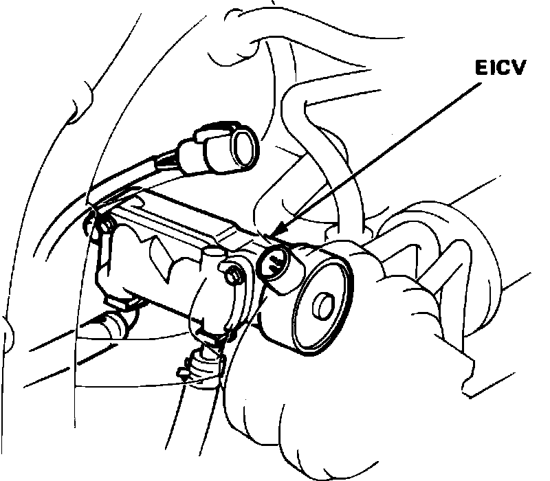
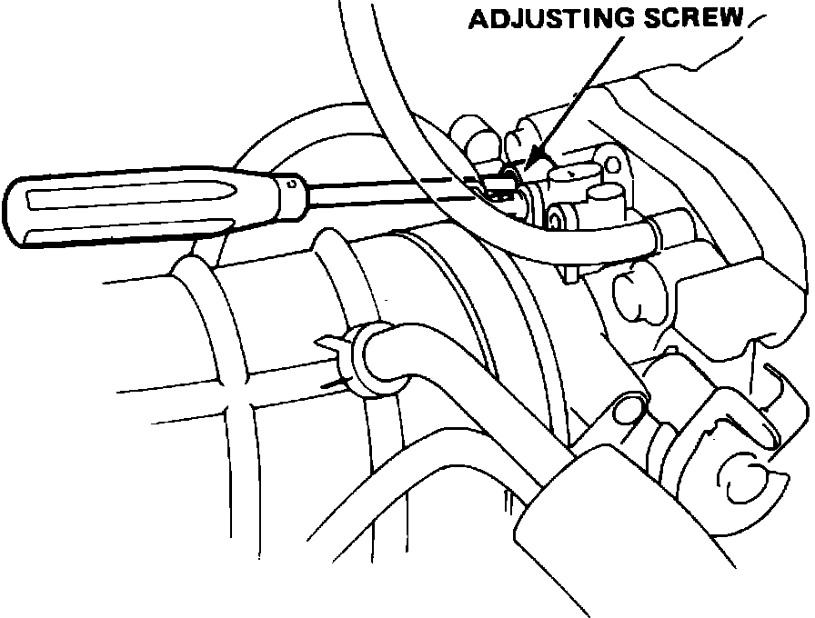

Idle Speed Setting
Fig. 1 Disconnecting EICV Connector:

Fig. 2 Idle Speed Adjusting Screw Location:

Curb Idle Speed, Adjust
1. Start engine and allow to reach normal operating temperature (cooling fan cycling).
2. Connect suitable tachometer to engine, then disconnect electrical connector to electronic idle air control valve (EICV), Fig. 1.
3. With all accessories off and transmission in Neutral, idle speed should be 500-600 RPM.
4. If idle speed as not as specified, turn adjusting screw on top of throttle body, Fig. 2, until desired idle speed is obtained.
5. Reconnect EICV electrical connector, then disconnect hazard fuse at positive battery terminal for approximately 10 seconds to reset ECU memory.
6. Start engine and again allow to reach normal operating temperature.
7. With all accessories off and transmission in Neutral, idle speeds should be as follows:
a. 750-850 RPM on all 1986 vehicles and 1987 vehicles equipped with manual transmissions.
b. 700-800 RPM on 1987 vehicles with automatic transmission and 1988 vehicles with manual transmissions.
c. 680-780 RPM on 1988 vehicles with manual transmissions.
8. With headlights, rear window defogger and A/C compressor on, and automatic transmission equipped vehicles in Drive, ensure that idle speed remains as outlined in previous step.
Fast Idle Speed, Adjust
Fast idle speed is controlled by the fast idle air bypass valve and is not adjustable. Fast idle speed should be 1250-2250 RPM. If speed is not as specified, check operation of the bypass valve as outlined in ``Fuel Injection'' under ``Component Testing.''